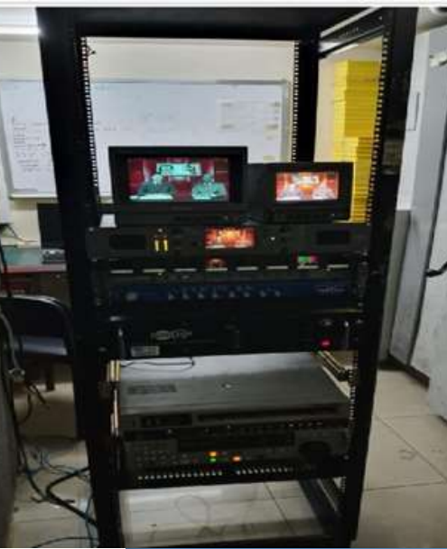
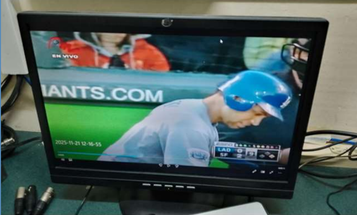

Sistema de Digitalización de Archivos
Preservación Histórica y Automatización de Videotecas
Una solución técnica y metodológica diseñada para la migración automatizada de archivos televisivos analógicos almacenados en cintas Betacam a formatos digitales de alta fidelidad. Optimiza los flujos de captura, garantiza el cumplimiento del marco legal de archivos audiovisuales y asegura la preservación del patrimonio histórico de medios de comunicación.
Infraestructura de Captura
Hardware de Vídeo Analógico, Codificadores H.264/ProRes y Almacenamiento NAS
Automatización y Gestión
Scripts de Automatización, Gestión de Metadatos y Control de Calidad (QA)
Rol
Especialista Técnico / Líder de Proyecto
Fecha
Diciembre 2025 - Enero 2026
Estado
Fase de Consultoría y Diseño Completada
Descripción
Sistema de Digitalización Meridiano Televisión
Desarrollo del marco técnico, logístico y legal para la migración masiva de una videoteca histórica en cintas analógicas (Betacam). Este proyecto define los estándares de compresión, flujos de trabajo de ingesta de vídeo y el cumplimiento normativo necesario para transformar archivos físicos vulnerables en activos digitales duraderos y accesibles.
🎯 Objetivos del Proyecto
- Preservación a largo plazo: Detener el deterioro físico del material analógico migrándolo a formatos digitales de alta fidelidad.
- Cumplimiento Técnico y Legal: Estructurar el proyecto bajo las leyes de derecho de autor y las normativas de archivos audiovisuales históricos.
- Eficiencia Operativa: Diseñar un flujo de trabajo que minimice el tiempo de captura y garantice la correcta indexación de metadatos.
👥 Usuarios / Beneficiarios
- Personal de Archivo y Documentalistas: Quienes gestionan, buscan y catalogan el material multimedia diariamente.
- Productores y Editores de Contenido: Que requieren acceso inmediato a material histórico para la creación de nuevos segmentos.
⚠️ El Problema
Las videotecas basadas en cintas magnéticas corren un riesgo crítico de pérdida total debido a la degradación física del material (humedad, hongos, desgaste) y la obsolescencia de los equipos reproductores. Además, la búsqueda de fragmentos específicos en archivos analógicos es un proceso lento que frena la dinámica de producción de un medio televisivo moderno.
💡 La Solución
Se diseñó una infraestructura de digitalización dividida en tres etapas clave: **Ingesta**, donde el hardware convierte la señal analógica a digital sin pérdida de calidad; **Procesamiento**, que estandariza los formatos y añade metadatos para su fácil indexación; y **Almacenamiento Seguro**, organizando los archivos en sistemas NAS con respaldos redundantes. Todo el proceso está respaldado por una sólida justificación legal que viabiliza el proyecto.
🚀 Resultados y Aprendizajes
- Arquitectura de Flujo de Trabajo: Diseño completo de la ruta del dato desde la reproductora Betacam hasta el servidor final.
- Estandarización de Formatos: Definición de codecs óptimos (como ProRes para preservación y H.264 para distribución rápida).
- Viabilidad Legal: Estructuración de las bases legales que defienden la digitalización como un acto de preservación cultural legítimo.
Áreas Técnicas
Imágenes

